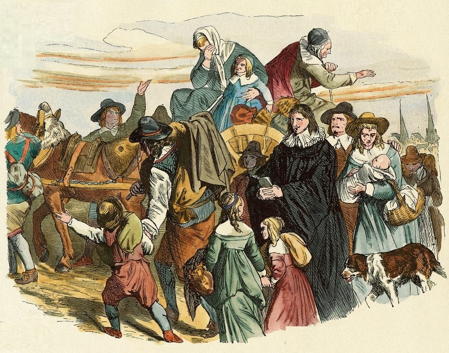

Arrival of French Huguenot immigrants in Brandenburg after the Great Elector Frederick William issued the Edict of Potsdam in 1685. Illustration for Weltgeschichte Fur Das Volk by Otto von Corvin and Wilhelm Held (Verlag und Druck von Otto Spamer, 1880).
We will be looking at, and replicating, this paper which looks at the influence of the mass emigration of French Huguenots to Prussia in the 17th century. It specifically looks at the effect of skilled immigration to places with underused economic potential on their productivity. It instruments for immigration with population loss in a Prussian area during the Thirty Years’ War - immigrants were encouraged to move to places that had lost a lot of people.
Variable descriptions are:
| Variable | Description |
|---|---|
| ln_output1802_all | (ln) Output (the dependent variable) |
| hugue_1700_pc | % Huguenots 1700 (a measure of immigration) |
| poploss_keyser | Pop losses in 30 Years’ War, Keyser (the instrument) |
| ln_workers1802_all | (ln) Workers |
| ln_looms1802_all | (ln) Looms |
| mi_ln_input1802_all | (ln) Value of Materials (imputed) |
| no_looms | Not using looms (dummy) |
| ln_popcity1802 | (ln) Town Population 1802 |
| vieh1816_schaf_ganz_veredelt_pc | Merino sheep p.c. 1816 (county) |
| pop1816_prot_pc | % Protestant |
| no_hugue_possible | Not Prussia in 1700 (dummy) |
| imputed_dummy | Dummy for imputed values |
| textil_1680_dummy | Relevant textile production before 1685 (dummy) |
Run a linear regression for the “first stage” of this IV analysis, regressing the measure of immigration on the instrument and all controls. Comment on what you see, keeping in mind that the Stock and Yogo cutoff for one treatment and one control to ensure that IV bias is less than 10% of OLS bias is 16.38. Outside of Stock & Yogo, any major concerns from what you see in this regression?
Ignoring the controls, produce a scatterplot graph with immigration on the y-axis and the instrument on the x-axis. Comment on what you see. Does this look like a strong relationship? Does the relationship look linear?
Run two 2SLS regressions, and display their estimates in a shared table, all using heteroskedasticity-robust standard errors. First, estimate 2SLS “by hand” by estimating the first stage like in Step 2, getting the predicted values, and using that in the second stage (remember, the standard errors for this one will definitely be wrong). Second, estimate the same model (again using 2SLS) but using a command specially designed to estimate IV. Then, show both regression results on a shared table (optionally, you may make the table show only the coefficient on the immigration variable, if you’d like it to be a bit cleaner).
predict(model, newdata = hr) instead of just predict(model).Run a third 2SLS model, this time without robust SEs but with adding the square of the instrument as a second instrument. Show the F statistic testing whether the coefficients on the instrument are jointly 0, and comment on what you see (the Stock and Yogo cutoff from Step 2 is now 19.93, note). Then, show the results of this third 2SLS model on the same table as the first two models from Step 4.
Our model from Step 5 has two instruments, so we can run an overidentification test on it. Comment on whether an overidentification test makes sense in this context or not, and why. Then, regardless of whether it makes sense, run the test (the Sargan, if you have a choice) and interpret the result.
Re-estimate the same model from Step 5, but this time use GMM to estimate the model. In R or Stata, show the results in a table shared with the model from Step 5.
If you are using R or Stata, re-estimate the 2SLS model using Anderson-Rubin confidence intervals. Comment on how this changes the results relative to the last model you ran in Step 4.
ivreg function from AER. Note that ivreg formula syntax is y ~ d + x | z + x, where d is treatment, z is the instrument, and x are controls. Controls must go on both sides of the |, unlike in feols().